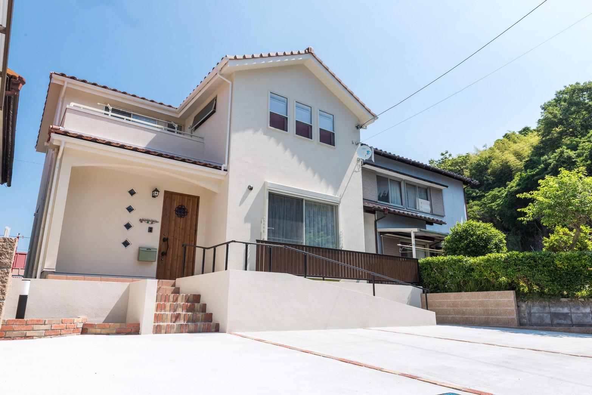
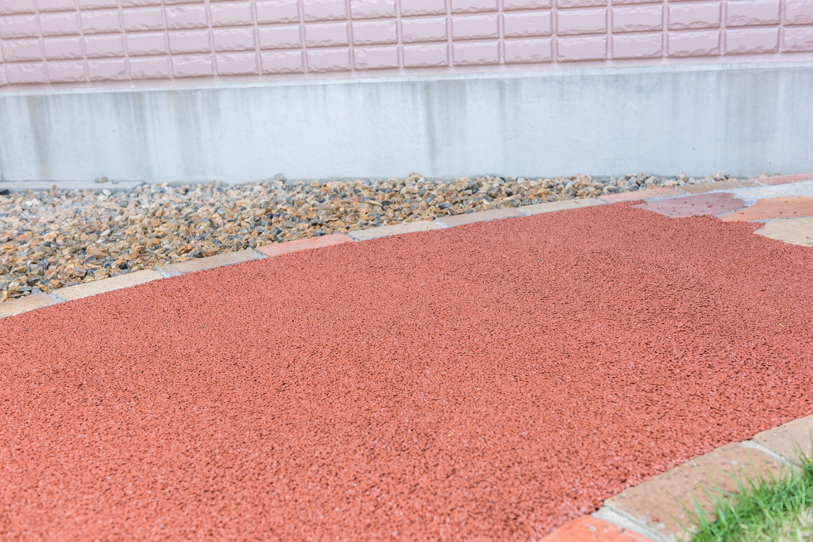
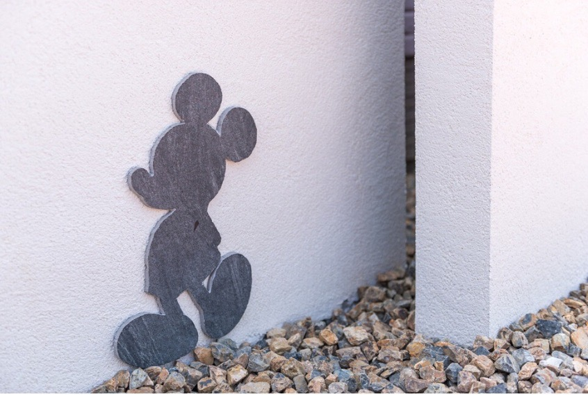
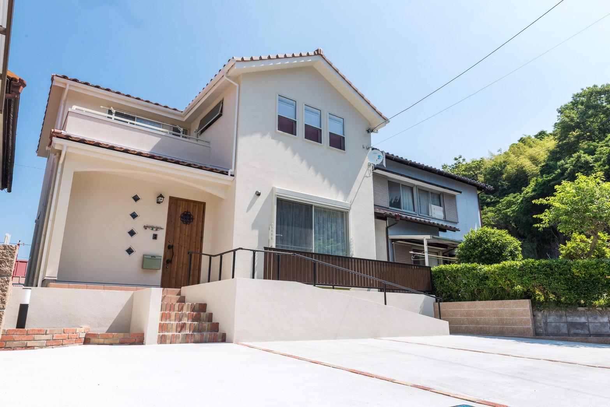
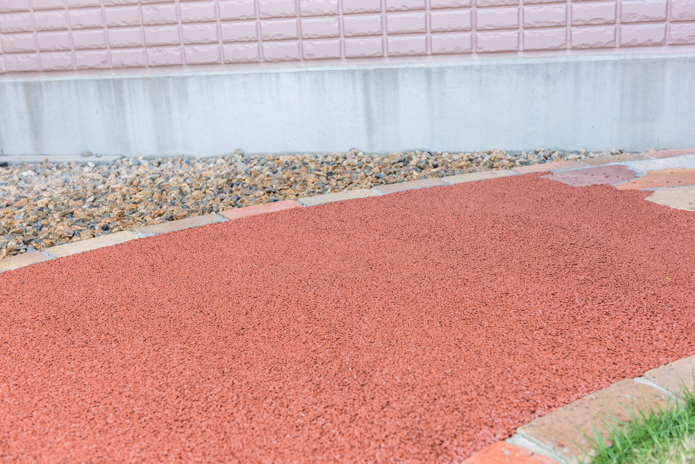
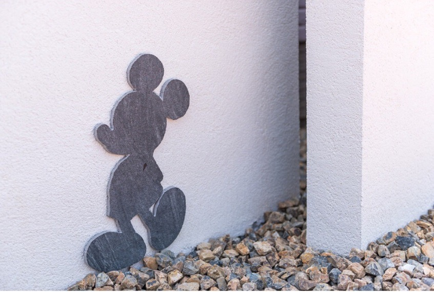

knutのページにお越しいただきありがとうございます。
私達は、岐阜県東濃地区を中心に愛知県での対応も行っております
「外構は高い！」と思うお客様が大変多くいらっしゃる現状を
私達が変えていきたい。そうゆ想いで取り組んでいます。
中間マージンが発生しないため、お値段もリーズナブルになっています。
今までの「とりあえず」ではなく、毎日見ていても飽きない外構工事が強みです。
施工事例に私達に出来る工事例を載せています。
毎日庭で楽しく遊ぶこどもたち、友人とのBBQ、春夏秋冬楽しめる
そんなお庭をあたなの家にもいかがでしょうか？


 




